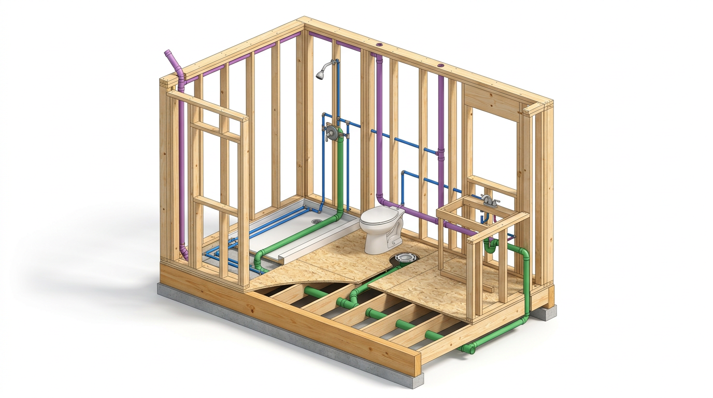
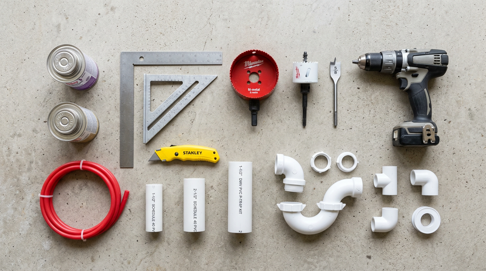
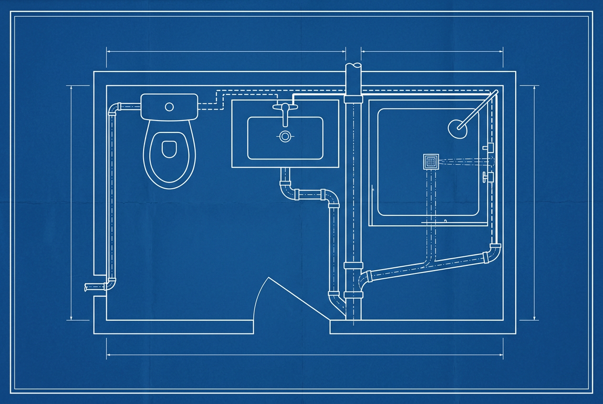

Bathroom Plumbing Rough-In Guide
Complete walkthrough of a standard 5×8 bathroom rough-in: toilet, sink, and shower — drain/waste/vent (DWV) plus water supply lines. Based on a professional home-builder tutorial.
Overview

5×8 Standard Bathroom
The most common residential bathroom size. Showers and tub/shower combos typically come in 5-foot widths. The 5×8 measurement is from edge of 2×4 stud wall to the opposite 2×4 wall before drywall.
Rough-In Dimensions Quick Reference
Toilet-Specific Dimensions
| Measurement | Value | Notes |
|---|---|---|
| Flange center → rear wall (unfinished) | 12½" | Measured from bare 2×4 stud wall |
| Flange center → rear wall (finished) | 12" | If drywall is already installed |
| Flange center → side wall/fixture | 15" minimum | Code minimum; more is fine |
| Cold water supply offset from center | 6" | Measured horizontally from flange center |
| Cold water supply height | 6" off floor | Inside the 2×4 wall |
| Subfloor hole diameter | 4½" | Using 4½" hole saw |
| Closet flange size | 3" | Standard PVC closet flange |
Sink (Lavatory) Dimensions
| Measurement | Value | Notes |
|---|---|---|
| Drain center from side wall | 12" (for 24" vanity) | Centered in 2×4 stud bay |
| Drain height above unfinished floor | 18½" | To center of the 1½" sanitary tee |
| Water lines height | ~21" | 3" above the drain |
| Hot line → Cold line | 8" apart | 4" each side of drain center |
| Hot water position | Left | Always left — code standard |
| Cold water position | Right | Always right — code standard |
| Wall hole for drain | 2⅛" | Using 2⅛" hole saw |
| Floor hole for water lines | ⅝" | Using ⅝" drill bit for ½" PEX |
| Drain pipe size | 1½" PVC | Standard DWV |
Shower Dimensions
| Measurement | Value | Notes |
|---|---|---|
| Drain pipe size | 2" PVC | Minimum for shower |
| Subfloor hole diameter | 4½" | Same hole saw as toilet |
| Water line center → back wall | 16" | Check your specific shower base |
| Hot/Cold spacing | 8" apart | 4" each side of center |
| Water line floor holes | ⅝" | Centered in 2×4 stud bay |
| Water line pipe size | ½" PEX | Branch lines from manifold/main |
Pipe & Fitting Sizes
DWV (Drain-Waste-Vent) Pipe Schedule
| Fixture | Drain Size | Vent Size | Trap Size |
|---|---|---|---|
| 🚽 Toilet | 3" PVC | 1½" (IPC) / 2" (UPC) | — (integral) |
| 🪣 Sink (Lavatory) | 1½" PVC | 1½" PVC | 1½" P-trap |
| 🚿 Shower | 2" PVC | 1½" (IPC) / 2" (UPC) | 2" shower trap |
DWV Fittings List
| Fitting | IPC Qty | UPC Qty | Used For |
|---|---|---|---|
| 1½" Sanitary Tee | 2 | 1 | Sink drain + vent tie-in |
| 2"×2"×1½" Sanitary Tee | 0 | 1 | UPC sink drain |
| 3" Sanitary Tee | 1 | 1 | Toilet drain/vent connection |
| 1½" 90° | 1 | 1 | Vent offset |
| 4"×3" Closet Bend | 1 | 1 | Toilet flange → drain |
| 4" Closet Flange | 1 | 1 | Toilet mounting |
| 3"×3"×1½" Wye + 45° | 1 | 1 | Vertical-to-horizontal drain transition |
| 3" Combo (Wye + ⅛ bend) | 1 | 1 | Toilet drain vertical→horizontal |
| 1½" P-Trap | 1 | 1 | Sink trap |
| 1½" Trap Adapter | 1 | 1 | Transition to P-trap |
| 3" Cleanout Adapter + Plug | 1+1 | 1+1 | Drain access |
| 3"×1½" Flush Bushing (IPC) | 1 | — | Reduce san-tee hub for vent |
| 3"×2" Flush Bushing (UPC) | — | 1 | Reduce san-tee hub for vent |
Complete Tools & Materials Checklist
| Item | Spec | Approx. Cost | |
|---|---|---|---|
| Power Tools & Drill Bits | |||
| Hole saw — Toilet & Shower drain | 4½" diameter | ~$50 | |
| Hole saw — Sink drain | 2⅛" diameter | ~$15 | |
| Spade/anchor bit — Water lines | ⅝" diameter | ~$8 | |
| Drill (corded or 20V cordless) | ½" chuck minimum | — | |
| Oscillating multi-tool / Sawzall | Metal blade for PVC | — | |
| Hand Tools | |||
| Framing square | Large, for wall layout | ~$15 | |
| Speed square | For stud centering | ~$10 | |
| Tape measure | 25' minimum | ~$15 | |
| Utility knife | For deburring PVC | ~$5 | |
| Pencil + marker | — | — | |
| DWV Pipe & Fittings (PVC Schedule 40) | |||
| PVC pipe — toilet drain | 3" diameter | ~$4/ft | |
| PVC pipe — shower drain | 2" diameter | ~$2.50/ft | |
| PVC pipe — sink drain & vent | 1½" diameter | ~$1.50/ft | |
| 3" Closet flange | PVC, fits inside 3" pipe | ~$8 | |
| 4"×3" Closet bend | PVC hub×hub | ~$6 | |
| Water Supply (PEX) | |||
| PEX tubing — hot & cold | ½" diameter (red/blue) | ~$0.50/ft | |
| PEX crimp rings + tool | Matched to fitting system | ~$40 tool | |
| PEX fittings (elbows, tees) | ½" brass or poly | ~$1 ea | |
| Joining Materials | |||
| PVC primer (purple) | Required by code | ~$6/qt | |
| PVC cement (clear or gray) | Regular-bodied | ~$6/qt | |
| Fasteners | |||
| Decking screws (closet flange) | 2" minimum | ~$8/box | |
| Drywall screws (temporary) | 1¼" | ~$5/box | |
| Final Connection Kit | |||
| Sink P-trap kit | 1¼" tubular with slip joints | ~$8 | |
| Marvell/Maev adapter | 1½" → 1¼" transition | ~$4 | |
| Quarter-turn shutoff valves | ⅜" compression, for PEX | ~$5 ea | |
| Toilet supply line | ⅜" × 12" braided | ~$6 | |
Dimensional Diagrams
Floor Plan — Top-Down Layout
Wall Elevation — Sink & Toilet Side View
DWV System — Drain, Waste & Vent

Step 1: Drilling All Floor & Wall Holes
Before installing any pipe, drill all rough-in holes. This avoids working around installed fittings.
Dry-fit the shower base
Place the shower base in position to mark the exact drain location. This ensures accurate hole placement.
Drill the toilet flange hole
Using a framing square against the wall, mark the center of the toilet position. From the stud wall (no drywall), measure 12½" to center. Use a 4½" hole saw — it's expensive (~$50) but required for closet flanges.
Drill the sink drain hole
For a 24" vanity: measure 12½" from the side wall and find the center of the 2×4 stud bay. Use a 2⅛" hole saw. Drill through the wall plate and subfloor.
Drill the shower drain hole
Use the same 4½" hole saw. Find center by measuring from both walls or by tracing the shower base drain opening. This requires a 2" PVC pipe.
Drill the sink water line holes (through floor)
From the drain center, measure 4" left and 4" right. Come in 3" from the wall for each line. Use a ⅝" drill bit for ½" PEX water lines.
Drill shower water line holes
Measure 16" off the back wall to center of shower base (verify with your base). Mark 4" left and 4" right. Find center of the 2×4 stud bay (about 1¾" from stud edge). Drill with ⅝" bit.
Drill toilet supply line hole
Measure 6" over from the center of the toilet flange. Find the center of the 2×4 stud wall and drill through. This supply line comes up inside the wall at 6" off the floor.
Drill the toilet vent hole
Behind the toilet, centered with the flange, drill a 1½" hole in the center of the 2×4 wall plate for the vent pipe.
Step 2: Toilet Flange Installation
Create a spacer block
Cut a piece of ¾" subfloor (Advantec or plywood) using a jigsaw. This simulates the thickness of your finished flooring so the flange sits at final floor height.
Temporarily tack the spacer
Center the spacer in the hole and tack it down with 1¼" drywall screws — just enough to hold temporarily.
Position the flange
Place the 3" closet flange on the spacer. Verify it's still 12½" from the stud wall.
Secure with decking screws
Use 2" minimum decking screws through each of the 4 flange holes. Snug — don't overtighten or the plastic flange will crack.
Step 3: Sink Drain & Vent Installation
Cut the 1½" PVC pipe to height
Measure up from the unfinished floor to 18½" — this is where the center of the 1½" sanitary tee will sit. Mark inside the tee hub, not at the bottom of the fitting.
Cut the pipe
Use an oscillating multi-tool or Sawzall with a metal blade (cleaner cut on PVC). Cut at your mark.
Deburr the pipe
Use a utility knife to scrape off all burrs — both inside and outside of the pipe. Inside burrs catch hair and cause clogs. Outside burrs prevent good glue joints.
Prime both surfaces
Apply purple PVC primer to the inside of the tee and the outside of the pipe. Required by code. Don't worry about getting it on wood.
Dry-fit and mark alignment
Slide the tee on with a dummy pipe piece for reference. Use a framing square off the stud wall to ensure the tee is perfectly square. Mark the tee and pipe with a pencil line.
Glue the joint
Apply PVC cement to the inside of the fitting and outside of the pipe. Push together, then give a ¼-turn rotation to spread the glue. Hold for a few seconds until set. Align with your pencil mark.
Run the vent up
Continue 1½" PVC up from the tee. This vent runs up through the wall and ties into the toilet's vent line. Horizontal sections of vent need a slight slope back toward the drain (condensation drains back).
Step 4: Water Supply Lines
Run ½" PEX tubing up through each ⅝" hole drilled in the floor.
| Fixture | Hot Line Position | Cold Line Position | Notes |
|---|---|---|---|
| Sink | 4" left of drain center | 4" right of drain center | Through floor, 3" off wall |
| Shower | 4" left of center | 4" right of center | 16" off back wall to center |
| Toilet | — | 6" from flange center | Inside 2×4 wall, 6" off floor |
PEX Connection Tips
- Use the correct crimp ring system (cinch clamp or copper crimp ring) consistently throughout
- Cut PEX squarely with a dedicated PEX cutter — not scissors or diagonal pliers
- Slide the crimp ring on first, insert the fitting fully, then position the ring 1/8"–¼" from the fitting shoulder
- Crimp squarely; test with a go/no-go gauge
- Use red PEX for hot, blue for cold — makes troubleshooting easy years later
Final Connections (After Drywall & Finish)
Sink Final Hookup
| Component | Size | Connection |
|---|---|---|
| Sink tailpiece (from drain) | 1¼" tubular | Threaded onto sink drain |
| P-trap kit | 1¼" slip joint | Connects tailpiece to trap adapter |
| Maev/Marvel adapter | 1½" → 1¼" | Transitions rough 1½" pipe to 1¼" trap |
| Shutoff valves | ¼-turn, ⅜" compression | Mount on PEX stubs; connect faucet supply lines |
| Faucet supply lines | ⅜" × flexible | Shutoff valve → faucet tail |
Toilet Final Hookup
- Install a ⅜" quarter-turn shutoff valve on the cold supply stub
- Connect with a ⅜" braided toilet supply line (12" typical)
- Set the wax ring, place the toilet, bolt down evenly
Shower Final Hookup
- Set the shower base over the 2" drain pipe
- Connect the shower drain assembly per manufacturer instructions
- Install the mixing valve (shower control) in the wall
- Connect hot and cold PEX to the mixing valve inlets
- Connect the shower riser pipe from valve to showerhead
Pro Tips & Code Notes
UPC (Uniform Plumbing Code): Toilet vent must be 2" • Uses 3"×2" flush bushing instead of 3"×1½"
Check which code your jurisdiction uses before buying fittings.
Tools Checklist
- 4½" hole saw (toilet + shower drain holes)
- 2⅛" hole saw (sink drain hole)
- ⅝" spade or auger bit (water line holes)
- Drill (corded or 20V+ cordless)
- Framing square (large)
- Speed square
- Tape measure (25' minimum)
- Oscillating multi-tool or Sawzall (for cutting PVC)
- Utility knife (deburring)
- PVC primer (purple) + cement
- Jigsaw (for spacer block)
- Pencil and permanent marker
- PEX crimp tool + go/no-go gauge
- PEX cutter
- Safety glasses

📖 Additional reference: Hammerpedia — How To Plumb a Bathroom (with DWV fitting list & dimensions)
📅 Compiled: July 15, 2025